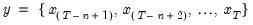

@imaxes Basic Statistics Indices of maximums values (multiple). Returns n workfile or row indices corresponding to the n-th maximums of the elements of x. Syntax: @imaxes(x, n[, s]) x: data object n: integer Return: vector If n is not an integer, the integer floor will be used. Return the actual workfile or row indices corresponding to  where the order statistics represent the data ordered from low to high. The indices will be ordered from high to low of the corresponding values. For series calculations, EViews will use the current or specified workfile sample. Examples Let x be a series of length 5 whose elements are 1, 3, 5, 4, 2, 5. Then = @imaxes(x, 1) returns a vector containing (3, 6) the set of indices corresponding to the value 5. Similarly = @imaxes(x, 2) returns a vector containing (3, 6, 4) the set of indices corresponding to the values 5 and 4. Cross-references See also @max, @maxes, @imin, and @imins.


 will be used.
will be used. represent the data ordered from low to high. The indices will be ordered from high to low of the corresponding values.
represent the data ordered from low to high. The indices will be ordered from high to low of the corresponding values.